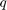
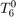
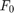
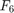

Contents
Figuring Out Rotation Matrix for 3 Link Stroke Rehab Arm
Prepared and submitted by Alexandra Valiton Spring 2018
clear all; close all; clc;
Questions 1 and 2: DH Parameters Table
See Figure 1 for axis labels at each joint. See Table 1 for the DH Parameters, based on the axis labels in figure 1.


In this section, each DH parameter will be declared as an [n x 1] vector, where each element index corresponds to the joint index. Since some of the DH parameters are static (e.g. link lengths) and others are variable (e.g. joint states), there is a vector of joint variables  whose elements will be used in the Parameter Vectors
syms q0 q1 q2 'real'; % Joint states, in degrees syms l0 l1 l2 l3 'real'; % Joint lengths, in cm q = [q0, q1, q2]; l = [l0, l1, l2, l3]; DH_theta = [0, deg2rad(90), q(1), q(2), q(3)+ deg2rad(90)]'; % Theta angles DH_d = [l(1), 0, l(2), 0, 0]'; % Displacements d in mm DH_a = [0, 0, 0, l(3), l(4)]'; % Displacements a in mm DH_alpha = [deg2rad(-45), 0, deg2rad(-90), 0, 0]'; % rotations alpha
Question 4: Calculate the Overall Transformation Matrix
The frame-by frame transformation matrices can be multiplied together to create the transformation matrix , representing the transformation between the base frame  and the tip frame . The transformation is first given purely symbolically, then with 0's inserted where they occur in the model (see Table 1).
T = eye(4); % start with an Identity matrix seed to multiply subsequent transformations by for i=1:length(DH_d) T_local = dhparam2matrix(DH_theta(i), DH_d(i), DH_a(i), DH_alpha(i)); T = T * T_local; end disp("The total transformation can be represented by:"); disp(vpa(T));
The total transformation can be represented by: [ - 1.0*sin(q2 + 1.5707963267948966192313216916398)*(0.00000000000000006123233995736766035868820147292*cos(q0)*cos(q1) - 1.0*sin(q0)*sin(q1)) - 1.0*cos(q2 + 1.5707963267948966192313216916398)*(0.00000000000000006123233995736766035868820147292*cos(q0)*sin(q1) + cos(q1)*sin(q0)), sin(q2 + 1.5707963267948966192313216916398)*(0.00000000000000006123233995736766035868820147292*cos(q0)*sin(q1) + cos(q1)*sin(q0)) - 1.0*cos(q2 + 1.5707963267948966192313216916398)*(0.00000000000000006123233995736766035868820147292*cos(q0)*cos(q1) - 1.0*sin(q0)*sin(q1)), -1.0*cos(q0), - 1.0*l3*cos(q2 + 1.5707963267948966192313216916398)*(0.00000000000000006123233995736766035868820147292*cos(q0)*sin(q1) + cos(q1)*sin(q0)) - 0.00000000000000006123233995736766035868820147292*l2*cos(q0)*sin(q1) - 1.0*l2*cos(q1)*sin(q0) - 1.0*l3*sin(q2 + 1.5707963267948966192313216916398)*(0.00000000000000006123233995736766035868820147292*cos(q0)*cos(q1) - 1.0*sin(q0)*sin(q1))] [ 1.0*cos(q2 + 1.5707963267948966192313216916398)*(0.70710678118654752440084436210485*cos(q0)*cos(q1) - sin(q1)*(0.00000000000000004329780281177466498205116037418*sin(q0) + 0.70710678118654752440084436210485)) - 1.0*sin(q2 + 1.5707963267948966192313216916398)*(0.70710678118654752440084436210485*cos(q0)*sin(q1) + cos(q1)*(0.00000000000000004329780281177466498205116037418*sin(q0) + 0.70710678118654752440084436210485)), - 1.0*cos(q2 + 1.5707963267948966192313216916398)*(0.70710678118654752440084436210485*cos(q0)*sin(q1) + cos(q1)*(0.00000000000000004329780281177466498205116037418*sin(q0) + 0.70710678118654752440084436210485)) - sin(q2 + 1.5707963267948966192313216916398)*(0.70710678118654752440084436210485*cos(q0)*cos(q1) - sin(q1)*(0.00000000000000004329780281177466498205116037418*sin(q0) + 0.70710678118654752440084436210485)), 0.00000000000000004329780281177466498205116037418 - 0.70710678118654752440084436210485*sin(q0), 0.70710678118654752440084436210485*l1 - 1.0*l2*sin(q1)*(0.00000000000000004329780281177466498205116037418*sin(q0) + 0.70710678118654752440084436210485) + 0.70710678118654752440084436210485*l2*cos(q0)*cos(q1) + 1.0*l3*cos(q2 + 1.5707963267948966192313216916398)*(0.70710678118654752440084436210485*cos(q0)*cos(q1) - sin(q1)*(0.00000000000000004329780281177466498205116037418*sin(q0) + 0.70710678118654752440084436210485)) - 1.0*l3*sin(q2 + 1.5707963267948966192313216916398)*(0.70710678118654752440084436210485*cos(q0)*sin(q1) + cos(q1)*(0.00000000000000004329780281177466498205116037418*sin(q0) + 0.70710678118654752440084436210485))] [ 1.0*sin(q2 + 1.5707963267948966192313216916398)*(0.70710678118654752440084436210485*cos(q0)*sin(q1) + cos(q1)*(0.00000000000000004329780281177466498205116037418*sin(q0) - 0.70710678118654752440084436210485)) - 1.0*cos(q2 + 1.5707963267948966192313216916398)*(0.70710678118654752440084436210485*cos(q0)*cos(q1) - sin(q1)*(0.00000000000000004329780281177466498205116037418*sin(q0) - 0.70710678118654752440084436210485)), 1.0*cos(q2 + 1.5707963267948966192313216916398)*(0.70710678118654752440084436210485*cos(q0)*sin(q1) + cos(q1)*(0.00000000000000004329780281177466498205116037418*sin(q0) - 0.70710678118654752440084436210485)) + sin(q2 + 1.5707963267948966192313216916398)*(0.70710678118654752440084436210485*cos(q0)*cos(q1) - sin(q1)*(0.00000000000000004329780281177466498205116037418*sin(q0) - 0.70710678118654752440084436210485)), 0.70710678118654752440084436210485*sin(q0) + 0.00000000000000004329780281177466498205116037418, l0 + 0.70710678118654752440084436210485*l1 + 1.0*l2*sin(q1)*(0.00000000000000004329780281177466498205116037418*sin(q0) - 0.70710678118654752440084436210485) - 0.70710678118654752440084436210485*l2*cos(q0)*cos(q1) - 1.0*l3*cos(q2 + 1.5707963267948966192313216916398)*(0.70710678118654752440084436210485*cos(q0)*cos(q1) - sin(q1)*(0.00000000000000004329780281177466498205116037418*sin(q0) - 0.70710678118654752440084436210485)) + 1.0*l3*sin(q2 + 1.5707963267948966192313216916398)*(0.70710678118654752440084436210485*cos(q0)*sin(q1) + cos(q1)*(0.00000000000000004329780281177466498205116037418*sin(q0) - 0.70710678118654752440084436210485))] [ 0, 0, 0, 1.0]
Question 7: Plot Arm in 3D
Given the 6 joint angles, plot a stick figure of the robot.
var1 = {l0, l1, l2, l3};
var2 = {0.07, 0.15, 0.21, 0.16};
DH_d = subs(DH_d, var1, var2);
DH_a = subs(DH_a, var1, var2);
T = subs(T, var1, var2);
var1 = {q0, q1, q2};
var2 = {0,0,0};%{0.44, -0.84, 1.64-pi/2};
DH_theta = eval(subs(DH_theta, var1, var2));
DH_alpha = eval(subs(DH_alpha, var1, var2));
plotarm_3DOF(DH_theta, DH_d, DH_alpha, DH_a);
FK = T(1:3,4);
R = eval(subs(T(1:3,1:3), var1, var2));
J = jacobian(FK, [q0,q1,q2]');
J = vpa(J,3)
J = eval(subs(J, var1, var2));
F_tip = [3.3;0;0];
tau = transpose(J)*(F_tip)
J = [ 1.29e-17*sin(q0)*sin(q1) - 0.21*cos(q0)*cos(q1) - 0.16*cos(q2 + 1.57)*(cos(q0)*cos(q1) - 6.12e-17*sin(q0)*sin(q1)) + 0.16*sin(q2 + 1.57)*(cos(q0)*sin(q1) + 6.12e-17*cos(q1)*sin(q0)), 0.21*sin(q0)*sin(q1) - 0.16*cos(q2 + 1.57)*(6.12e-17*cos(q0)*cos(q1) - 1.0*sin(q0)*sin(q1)) - 1.29e-17*cos(q0)*cos(q1) + 0.16*sin(q2 + 1.57)*(6.12e-17*cos(q0)*sin(q1) + cos(q1)*sin(q0)), 0.16*sin(q2 + 1.57)*(6.12e-17*cos(q0)*sin(q1) + cos(q1)*sin(q0)) - 0.16*cos(q2 + 1.57)*(6.12e-17*cos(q0)*cos(q1) - 1.0*sin(q0)*sin(q1))] [ - 9.09e-18*cos(q0)*sin(q1) - 0.148*cos(q1)*sin(q0) - 0.16*cos(q2 + 1.57)*(4.33e-17*cos(q0)*sin(q1) + 0.707*cos(q1)*sin(q0)) - 0.16*sin(q2 + 1.57)*(4.33e-17*cos(q0)*cos(q1) - 0.707*sin(q0)*sin(q1)), - 0.148*cos(q0)*sin(q1) - 0.16*cos(q2 + 1.57)*(0.707*cos(q0)*sin(q1) + cos(q1)*(4.33e-17*sin(q0) + 0.707)) - 0.16*sin(q2 + 1.57)*(0.707*cos(q0)*cos(q1) - sin(q1)*(4.33e-17*sin(q0) + 0.707)) - 0.21*cos(q1)*(4.33e-17*sin(q0) + 0.707), - 0.16*cos(q2 + 1.57)*(0.707*cos(q0)*sin(q1) + cos(q1)*(4.33e-17*sin(q0) + 0.707)) - 0.16*sin(q2 + 1.57)*(0.707*cos(q0)*cos(q1) - sin(q1)*(4.33e-17*sin(q0) + 0.707))] [ 9.09e-18*cos(q0)*sin(q1) + 0.148*cos(q1)*sin(q0) + 0.16*cos(q2 + 1.57)*(4.33e-17*cos(q0)*sin(q1) + 0.707*cos(q1)*sin(q0)) + 0.16*sin(q2 + 1.57)*(4.33e-17*cos(q0)*cos(q1) - 0.707*sin(q0)*sin(q1)), 0.148*cos(q0)*sin(q1) + 0.16*cos(q2 + 1.57)*(0.707*cos(q0)*sin(q1) + cos(q1)*(4.33e-17*sin(q0) - 0.707)) + 0.16*sin(q2 + 1.57)*(0.707*cos(q0)*cos(q1) - sin(q1)*(4.33e-17*sin(q0) - 0.707)) + 0.21*cos(q1)*(4.33e-17*sin(q0) - 0.707), 0.16*cos(q2 + 1.57)*(0.707*cos(q0)*sin(q1) + cos(q1)*(4.33e-17*sin(q0) - 0.707)) + 0.16*sin(q2 + 1.57)*(0.707*cos(q0)*cos(q1) - sin(q1)*(4.33e-17*sin(q0) - 0.707))] tau = -0.6930 -0.0000 -0.0000